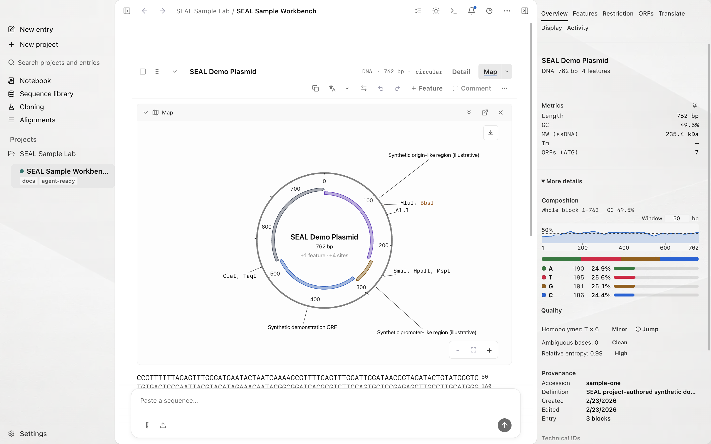
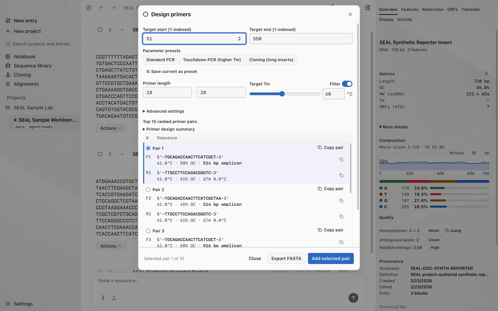
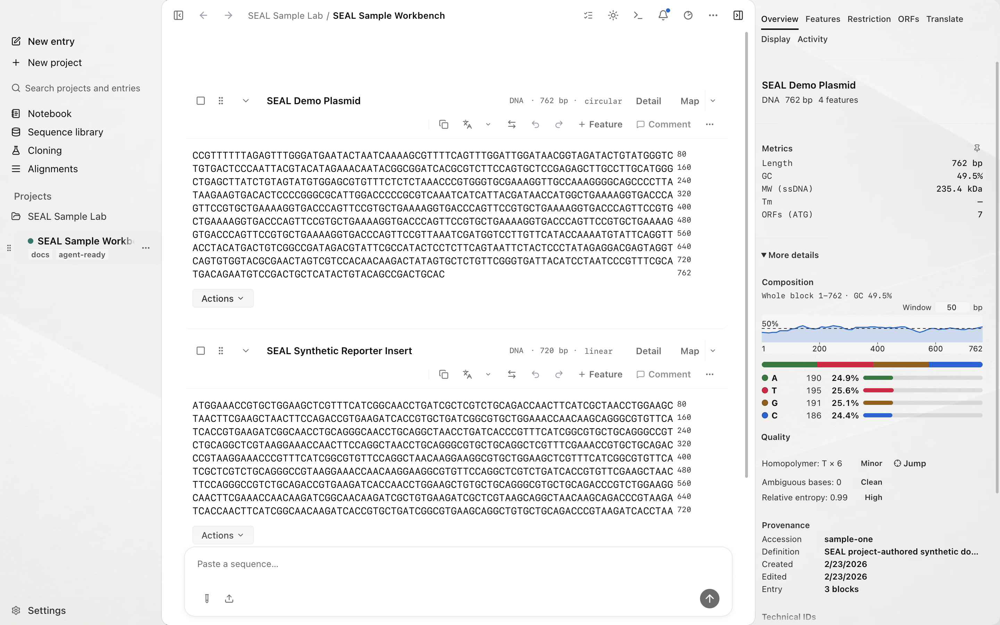
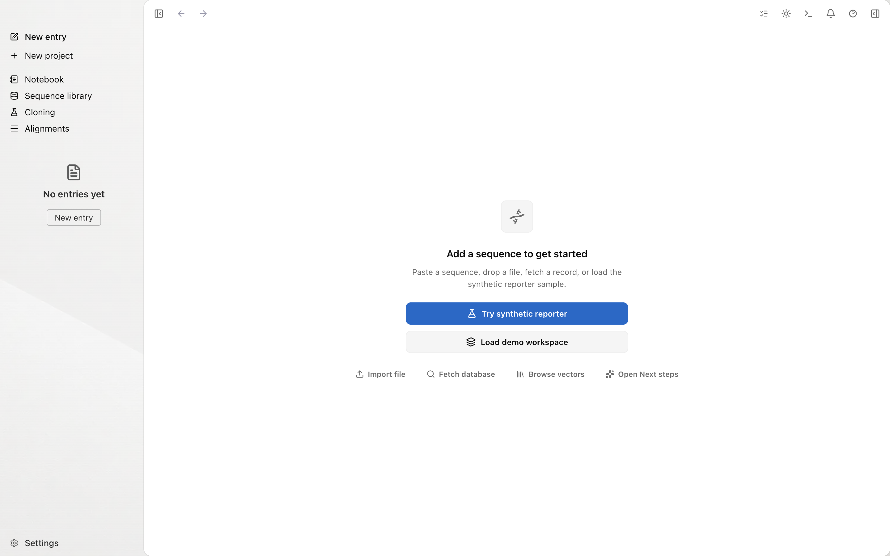
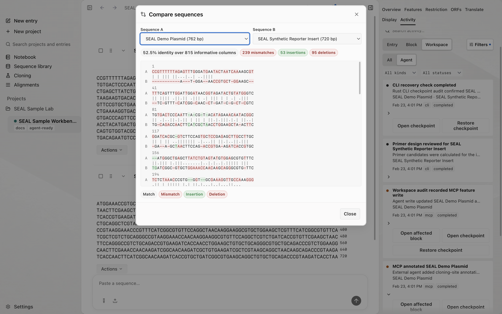
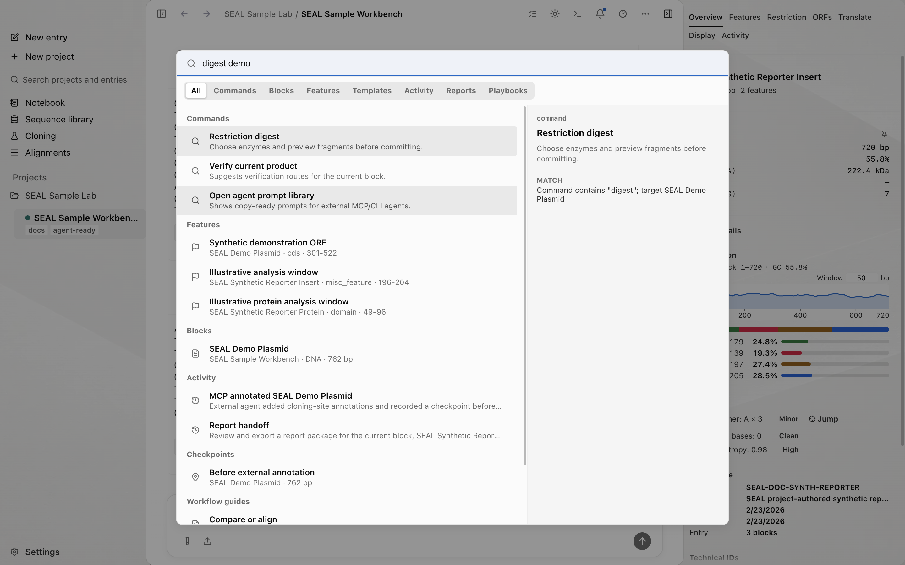
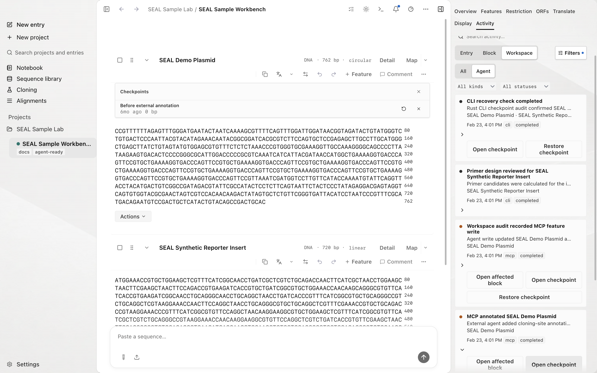
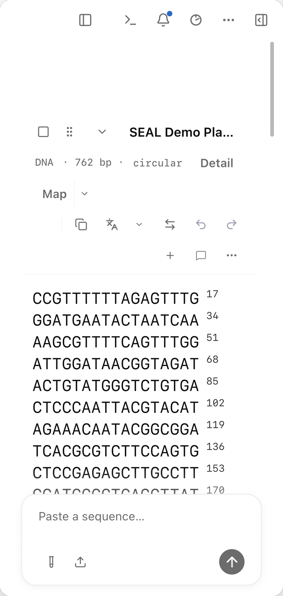

Sequences and maps
Edit bases and features with a linked circular or linear map.
Sequence · Editing · Activity · Library
Explore biological sequences, test ideas, and develop your research, with analysis tools and lab notes in one workspace on your Mac.
The App Store edition will launch first. Compare editions.
Direct-edition recording: follow the Sample Lab from a first sequence to an exported report. AI narration. Chapters and transcript.
Keep your sequences, analyses, and lab notes together on your Mac. Open a workspace and continue where you left off.
Edit DNA, RNA, and protein alongside maps and annotations. Select a region to add a feature, create a derived sequence, or follow its live translation.
Review workspace changes in Activity and recover earlier versions with checkpoints. Keep sequences, parts, and feature templates in the Sequence Library, ready to reuse.
Explore SEAL
Open any screenshot for a closer view. The examples use synthetic sequences you can explore in the app.

Edit bases and features with a linked circular or linear map.

Design primers and review digest, PCR, and assembly plans.

Compare variants and inspect Sanger reads with their chromatograms.

Keep experiment notes and export sequences with a report.
Get SEAL
SEAL will launch on the Mac App Store first. A download link will appear here when the app is available.
Edit sequences, inspect local analyses, and keep lab notes in one workspace. See which tools are planned for the first Store release.
Store edition detailsFind setup information, contact support, and read how SEAL stores data and handles network requests.
Contact supportIn the app
Each one has a documentation page.
Sample workspace
Open one from the Start Panel, follow it through, then build your own.
Translate the project-authored reporter DNA, compare the derived protein, inspect features and ORFs, then export FASTA or GenBank and build a report package.
Fixture: Synthetic Reporter DNA
Inspect illustrative origin-like, marker-like, and multi-cloning-site features. Run a restriction map and preview vector and insert compatibility in Clone Builder.
Fixture: SEAL Synthetic Cloning Backbone
Inspect three synthetic Level 0 parts, the destination backbone, the shipped sample product, its Activity event, and the linked assembly notebook before an in-silico rerun.
Fixture: SEAL Golden Gate Sample Assembly
Inspect parent features, derived CDS and protein blocks, search synthetic annotations, and build a report while keeping every child tied to its parent interval.
Fixture: SEAL Synthetic Genomic Region (30 kb)
Keep highlights and layout in the styled report while biological exports stay clean. Inspect the portable zip, manifest.json, and validation.md.
Output: reviewable local package
Every bundled sample is project-authored, synthetic, and deterministic. Browse the full workflow gallery.
Tour
These views come from the current SEAL app and its project-authored Sample Lab. Click a tab to compare the major work surfaces.


Inline mutation tracking, feature annotations, and per-block stats stay on the same canvas. Drag to reorder, paste from the clipboard, or import FASTA, FASTQ, GenBank, EMBL, GFF, SBOL, binary DNA, ABI, PDB/mmCIF, CSV, or registry JSON.


Search 154 built-in enzymes or narrow the list to common cutters. Clone Builder previews vector and insert compatibility. Gibson, Golden Gate, GoldenBraid, PCR, and ligation tools keep the plan inspectable.

Drag across DNA or RNA and the Inspector updates without a separate run step. The readout exposes the current frame, strand, genetic code, amino-acid count, trailing bases, and internal-stop warnings through an accessible live region.


Use a selection or the whole sequence, inspect coordinates and internal stops, copy any frame, reveal it on the parent, or promote it to a derived protein block. Circular-origin selections keep their parent coordinates.


Choose DNA or RNA, a host table, and a codon strategy: Max-frequency, Balanced codon usage, or Synthesis-guarded. Add enzyme names or motifs under Avoid sites. Review the preview and remaining sites, then copy it or create a draft block. Stop codons remain in the sequence; unencodable symbols become NNN.

Open a saved alignment from the Alignments page. Inspect differences, conservation, primer features, and trace peaks. Six synthetic examples let you explore DNA, RNA, protein, and clone-verification workflows.

Organize Notebook pages by project and notebook. Add text, tables, images, and comments, then link a page to an Entry or sequence region. The Library stores parts and feature templates for reuse.


Activity shows recorded changes with their source. Save a checkpoint before editing a sequence block, then compare or restore that block when needed.


Select sequences and export them with a styled report. Choose GenBank for sequence metadata, FASTA for sequences, or CSV for tabular summaries. The package includes a manifest and validation file.
Source and direct editions
Use the source and direct editions to connect agents through MCP and work with sequences through the CLI. These editions will become available after the Mac App Store launch.
Read the edition differences. Developer setup guides describe the source and direct editions.
Source-edition developer tools
The source-edition tools check a Notion schema and a local order-release policy. Read the source guide for setup and supported checks.
Alignment examples
The Alignments page includes six synthetic examples with saved results. Open one to inspect aligned sequences, conservation, and differences.
Compare forward and reverse reads against a 1.2 kb reference, with primer features and traces.
Inspect overlapping primer-walk reads against a 2.4 kb clone reference.
Review substitutions and gaps across a reference and 11 synthetic samples.
Navigate a longer alignment and compare conserved and variable regions.
Compare aligned residues and conservation across related protein sequences.
Inspect RNA differences with the alignment's molecule type and coordinates preserved.
Cite this work
Use this software citation when describing work you did with SEAL. Update the version to the build you used.
@software{vogan_seal_2026,
title = {SEAL: a local-first sequence design workbench},
author = {Vogan, Jacob},
year = {2026},
version = {2.2.1},
license = {MIT}
}FAQ
Load the SEAL Sample Lab, open Synthetic Reporter, select a DNA range to see live translation, compare all six frames, and open its derived protein to preview a reverse-translation draft. Then try a synthetic restriction plan or report package. The Sample Lab guide has worked recipes.
SEAL ships five project-authored, deterministic synthetic vector fixtures plus synthetic reporter, assembly, protein-model, and 30 kb genomic-region demonstrations. They cover sequence editing, cloning, translation, alignment, reports, and Activity. They are documented in EXAMPLE_GALLERY.md.
Into the Notebook, a full-pane document space organised as projects, notebooks, and pages. A page takes rich text, tables, imported spreadsheets, images, and comments anchored to a span, and it links to the entry, block, or base range it describes. Pages carry a status and a revision history, and signing one freezes that revision and locks the page. See Notebook and Records and signing.
Source and direct editions support separately installed MCP and CLI tools. The first Store release does not launch agents or include a terminal. Compare editions before following an agent setup guide.
Sequence editing, built-in analysis, Notebook, maps, traces, and reports work locally. Fetching NCBI or UniProt records and submitting EBI predictions require a network connection. Hosted-model and external-agent workflows belong to supported source and direct editions.
The Store edition uses its sandbox-managed workspace or a folder selected through File → Workspace. Use the workspace backup and restore controls, and keep an independent backup. See storage and recovery details.
Use the BibTeX entry above and update its version to the build you used.
SEAL stores workspace records locally. Fetching database records or submitting a protein prediction sends the requested data to that service. Source and direct editions offer additional integrations. The privacy page explains each boundary.
The source is MIT-licensed. A paid Mac App Store edition is planned; its price has not been announced.
SEAL is coming to the Mac App Store first. A link will appear in Get SEAL when it is available. The source repository and GitHub app downloads will launch later.
The desktop build targets Apple silicon Macs. Windows and Linux desktop packages are not provided.